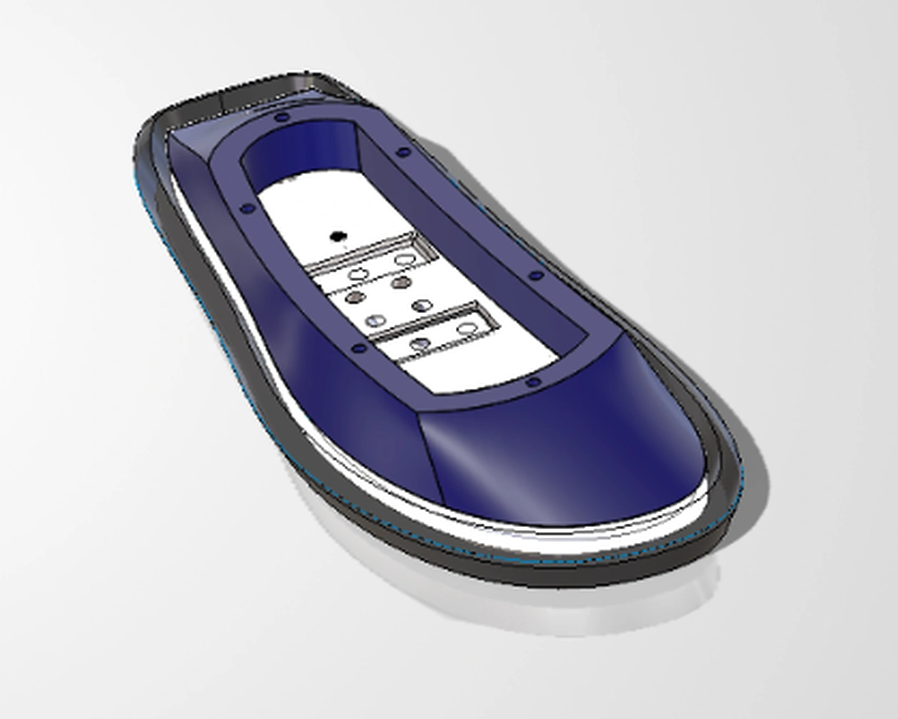

CENTER OF MASS / PARAMETRIC STUDY
Why 47–54% is the current COM envelope
21 simulated configurations, two evidence plots, a full results table, and explicit trade-offs between quiet-standing stability, limb inertia, and mechanical packaging.
Independent Humanoid Robot Development. Mechanical Design, CAD, material selection, manufacturing,structural analysis, and simulation.
Current work: foot assembly, ankle mechanism,and actuator-driven linkages.

REV 02 · OCT 2026The current baseline assembly and its available evidence.
Three active components: a traction-focused rubber outsole, a 6061-T6 aluminum mounting bracket, and a curved, non-load-bearing PLA exterior cover finished in deep indigo. The carbon-fiber plate is deliberately excluded from this baseline.
Simulation evidence and documented design decisions.
21 simulated configurations, two evidence plots, a full results table, and explicit trade-offs between quiet-standing stability, limb inertia, and mechanical packaging.
Planned work—not completed milestones.
Current three-part right-foot baseline, documented design choices, print strategy, and open mechanical validation tasks.
The black rubber outsole provides the planned contact layer; the 6061-T6 aluminum bracket forms the structural ankle interface; the deep-indigo PLA cover shapes the visible exterior and is not intended as a primary load path. The carbon-fiber plate is not part of the present assembly.
Exactly three parts in the present baseline—not counting fasteners.
Ground-contact element and dark visual perimeter. Intended to provide traction and contact compliance; grade, attachment, friction, and wear performance require testing.
Aluminum structural mounting interface to the future ankle. Houses machined fastening features and is the receiving component for the lower cover fasteners.
Deep-indigo curved bodywork with a clean, continuous outer form. Planned FDM print, with six upper M4 future-mounting positions and six lower locations for the metal-to-plastic assembly interface.
DESIGN HISTORY · A former 3 mm carbon-fiber plate concept is archived for future study. It is not represented as a fourth current part.
Design for Reliability (DFR) governs the lower exterior-to-aluminum interface.
The exterior PLA cover is nonstructural, but it must remain attached during walking, acceleration, repeated impacts, and vibration. Six mechanical screw locations were selected because their retention, seating, and inspection can be engineered and tested more predictably than an untested magnetic-only concept.
The counterpart is aluminum 6061-T6. Ordinary magnets do not adhere to it; magnetic attachment would additionally require ferromagnetic targets, positional restraints, and drop-prevention features. That concept remains an alternative, not the current design.
Heat-set threaded inserts were considered for repeatedly removable PLA-to-PLA attachments, but the inserts are not physically available yet. Without the chosen insert in hand or verified manufacturer dimensions, the receiving bore geometry, installation interference, insertion process and retention cannot be evaluated properly. Initial prototypes therefore use manually cut M4 PLA threads where required, with thread durability monitored. The six lower cover-to-aluminum screws already engage the aluminum; brass inserts in the PLA clearance component are not needed for that connection.
Revisit condition: Procure actual inserts, confirm datasheet dimensions and installation method, print test coupons, and compare thread retention and repeated assembly against manually tapped PLA. Heat-set installation is not the same as a cold press-fit.
Manufacturing intent—not a completed slicer result or printed part.
SOLIDWORKS currently assigns Acrylic (Medium-high impact) as a temporary, approximate density/appearance stand-in. The manufactured part is planned in PLA; before meaningful FEA or mass reporting, replace this placeholder with a custom, print-process-specific PLA definition.
FDM tensile behavior and stiffness can vary with raster direction, layer adhesion, walls, infill and print orientation. A generic isotropic PLA property card is insufficient for validated mechanical simulation. Use measured print-specific orthotropic properties where supported or characterize printed coupons; keep uncertainty explicit.
Plan to use slicer-generated tree supports under overhangs and any hole features that require support in the selected orientation. Not every hole necessarily needs support. Inspect the toolpath, keep supports out of inaccessible cavities, and verify surface finish, dimensional accuracy, and easy removal.
Separate geometry screening from physical process validation.
The earlier bracket geometry passed ten configured milling/drilling checks. That result is not a substitute for rechecking the updated bracket, threads, joint strength, or machining setup.
Organic support generation is anticipated around challenging overhangs and holes. Final build orientation, support placement, boss integrity, printed dimensional accuracy, and finish are still unverified.
Earlier geometry satisfied two configured thickness rules. Mold tooling feasibility and outsole material/process decisions remain open; no production release is implied.
Provided CAD captures, including an isolated crop of the current foot. Click any image to inspect it.
Explicit engineering choices, stated with current evidence limits.
Six lower mechanical fasteners were chosen over a magnetic quick-release concept because secure retention during locomotion matters more than tool-free exterior removal. Physical bolt/joint testing has not yet confirmed retention under walking loads, but the chosen concept provides an inspectable, mechanically constrained path for validation.
Two interfaces are kept distinct: the six lower cover-to-aluminum positions and six upper M4 locations reserved for future exterior pieces. Mechanical access, fastener standardization, countersunk head clearance, and eventual disassembly matter alongside clean bodywork.
The smooth, continuous curved PLA cover uses a deep indigo finish, visually separated from the black rubber outsole and metallic structural bracket. The goal is a coherent exterior form without pretending that the cover carries the primary robot loads.
The rubber component is intended to provide a contact interface; the aluminum bracket provides the main structural and ankle connection; the printed PLA is protective/aesthetic exterior bodywork. The actual pressure distribution, GRF history, stiffness, traction and wear performance are not yet measured.
Carbon fiber appeared in an earlier concept, but it is not included in the current assembly. A plate might change bending stiffness, mass and elastic energy storage, but it could also add manufacturing complexity, cost and unwanted stiffness. Its benefit must be demonstrated, not assumed. Compare the present baseline against a CFRP variant with the same mounting/contact constraints, using quantitative deflection and stress analysis, system mass, fatigue/impact tests, contact/traction behavior and gait-level performance before deciding.
Your personal browser-local timeline. Public site visitors do not see one another’s entries.
This design site is public, but entries created through this form remain local to this browser. Use Export JSON for your own backups; edit index.html and republish to update the shared public record.
This form stores notes only in the browser that you are currently using; it is not a public guestbook.
These notes are not added to the published site or visible to its other visitors. Export and retain your own backups.
Unresolved at the current CAD revision:
Universal joint, pushrod linkages, bearing interfaces, and fastening development.
Initial physical prototype of the pushrod linkage mounting arrangement. The design uses circular bearing interfaces and mechanically retained fasteners rather than elongated adjustment slots.
The prototype is being used to evaluate the fastening arrangement, component alignment, and suitability of the geometry for laser-cut manufacturing.
The intended final configuration uses appropriately sized through-bolts and locknuts, eliminating the need for tapped holes in the linkage plates.

Manufacturing-driven selection of the linkage fastening arrangement.
The ROBOTTO Party Origin linkage serves as a mechanical design reference. Its CNC-machined components incorporate bearing mounting features into the linkage geometry.
This provides a useful reference for joint packaging and linkage architecture, but the manufacturing approach is not being directly replicated.
The proposed design uses flat linkage geometry, circular bearing interfaces, and through-bolts secured with locknuts.
This removes the need for tapped linkage holes and reduces dependence on secondary machining operations.
The objective is to preserve the required joint functionality while simplifying manufacturing and assembly.
Selected concept: Use standard through-bolts with locknuts instead of threaded holes in the laser-cut linkage components.
The fasteners provide axial clamping and mechanical retention. Close-clearance holes are intended to reduce positional play and improve alignment between the assembled components.
The bearing interface must independently maintain the required rotational freedom. Where a fastener passes through a bearing, suitable spacers or shoulders will be used to prevent unwanted bearing compression.
Manufacturing rationale: Eliminating tapped holes allows the linkage plates to be manufactured primarily from two-dimensional cut profiles.
Assembly rationale: Standardized fasteners simplify installation, disassembly, replacement, and future maintenance.
Physical assembly photographs. Select an image to inspect it at full resolution.
The physical prototype demonstrates the proposed linkage geometry and the arrangement of the bearing and fastening interfaces.
The current photographs show temporary fasteners extending beyond the linkage. These are not representative of the intended final bolt lengths.
Final hardware will be selected according to the assembled grip length, required thread engagement, and available clearance.
The prototype provides a basis for evaluating the mechanical assembly concept. Structural capacity, fatigue performance, bearing retention, and dynamic reliability have not yet been verified.
Remaining checks before finalizing the linkage design.
Planned mechanical design work.
How a 45–65% height sweep informed the preliminary 47–54% center-of-mass design envelope for the 1.20 m humanoid.
A mid-height range is selected as a practical design target: quiet-standing simulation shows little additional benefit from lowering the COM below this range, while the mechanical design must preserve actuator placement, compact lower legs, wiring space, and future packaging flexibility.
MuJoCo · balance controller · 10 simulated seconds per case · no external force
Maximum and final tilt in degrees. Vertical scale deliberately zoomed to reveal very small differences.
Largest observed commanded torque fraction as a percent of the applicable configured actuator limit.
Multi-objective mechanical design considerations, not just the minimum standing tilt.
Maximum tilt changes only 0.003° between 45% and 47% (0.258° versus 0.261°). The current quiet-standing metric therefore provides little justification, on its own, for extra packaging compromises needed to lower the COM another 2 percentage points.
Lowering COM by moving heavy batteries or actuators toward the feet could increase leg swing inertia and make fast movements more demanding. COM height alone does not determine inertia; a compact pelvis-mounted mass arrangement could achieve a lower COM without the same penalty.
Actuator mounts, wiring, joint bearings, structural load paths, electronics, cooling, and service access all limit where mass can physically live. A 47–54% envelope offers flexibility while components and assemblies continue evolving. This is a design-planning benefit, not a measured mass-packaging score.
All 21/21 cases passed with both feet touching and zero actuator torque saturation. Resting tilt is therefore too weak a discriminator to justify an exact optimum. The range remains open to adjustment after disturbance recovery, squatting, stepping, and single-leg tests.
48% COM = 0.576 m for the 1.20 m model. It falls inside the 47–54% working envelope, with a maximum quiet-standing tilt of 0.263° and peak torque utilization of 1.70%. Relative to 45% COM, the tilt difference is just 0.005° in the present controller setup.
The reference is selected as an engineering compromise: stay near the lowest resting-tilt values without prematurely requiring mass relocation that may conflict with structural packaging, manufacturability, serviceability, and dynamic limb inertia. The upper boundary of 54% is a working envelope, not a detected threshold: 55% also passes and differs only slightly.
All 21 runs extracted from the simulation console output; target rows shaded.
| COM (% height) | COM z (m) | Final tilt | Max tilt | Peak torque* | Design band |
|---|---|---|---|---|---|
| 45% | 0.540 | 0.232° | 0.258° | 1.67% | Outside range |
| 46% | 0.552 | 0.235° | 0.260° | 1.68% | Outside range |
| 47% | 0.564 | 0.237° | 0.261° | 1.69% | Candidate |
| 48% ◆ target | 0.576 | 0.240° | 0.263° | 1.70% | Candidate |
| 49% | 0.588 | 0.242° | 0.265° | 1.72% | Candidate |
| 50% | 0.600 | 0.245° | 0.267° | 1.74% | Candidate |
| 51% | 0.612 | 0.248° | 0.270° | 1.76% | Candidate |
| 52% | 0.624 | 0.250° | 0.273° | 1.78% | Candidate |
| 53% | 0.636 | 0.253° | 0.276° | 1.80% | Candidate |
| 54% | 0.648 | 0.256° | 0.279° | 1.81% | Candidate |
| 55% | 0.660 | 0.259° | 0.282° | 1.83% | Outside range |
| 56% | 0.672 | 0.262° | 0.286° | 1.84% | Outside range |
| 57% | 0.684 | 0.265° | 0.289° | 1.85% | Outside range |
| 58% | 0.696 | 0.268° | 0.293° | 1.85% | Outside range |
| 59% | 0.708 | 0.271° | 0.297° | 1.85% | Outside range |
| 60% | 0.720 | 0.275° | 0.302° | 1.85% | Outside range |
| 61% | 0.732 | 0.278° | 0.306° | 1.85% | Outside range |
| 62% | 0.744 | 0.281° | 0.311° | 1.88% | Outside range |
| 63% | 0.756 | 0.285° | 0.316° | 1.92% | Outside range |
| 64% | 0.768 | 0.289° | 0.320° | 1.96% | Outside range |
| 65% | 0.780 | 0.292° | 0.326° | 1.99% | Outside range |
* “Peak torque” = highest reported fraction of the configured torque limit, not power use or energy consumption. All cases ran 10 s (5,000 timesteps), with both feet in contact at completion, no torque-saturation events, finite numerical states, and baseline_pass=True. The table is the 10-second COM sweep; a separate 120-second no-push baseline was run for the 50% case.
Separating model evidence from design intuition is part of the engineering record.
Proposed next phase; the following work is not represented as completed.
Apply equal-duration, equal-magnitude forward and lateral force pulses at the same body site. Compare peak tilt, maximum COM drift, fall/no-fall, and time to recover.
Compare squat, step recovery, and single-leg support. Account for joint torque RMS, actuator saturation, swing-leg inertia and the effects of actual actuator placement.
Replace the fictitious ballast with estimated masses of the actual motors, structural parts, batteries, and electronics, and recompute COM plus inertia tensors.
A public overview of planned humanoid subsystems. Only the right foot has a current design record.
Current three-part foot: rubber, 6061-T6 aluminum and deep-indigo PLA, with reliability-focused attachment.
Yoke, pitch/roll axes, ball-bearing joints, and actuator pushrods.
Linkages, motor mounts, knee/hip interfaces, mass budget.
Load paths, packaging, connection patterns, and electronics mounts.
Motor sizing, encoders, sensors, power, and wiring.
Dynamics, gait control, system identification, and validation.
Record new observations privately in your browser. Published design decisions live in the Foot Assembly documentation; this journal is not synchronized between visitors.
Browser-local storage may be cleared. Use the export control to back up your engineering notes as JSON.
This subsystem isn't documented yet. The workspace is ready to grow as new CAD assemblies and test results are added.